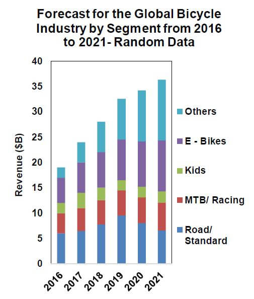
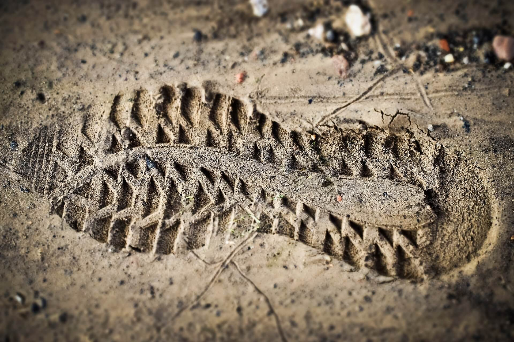
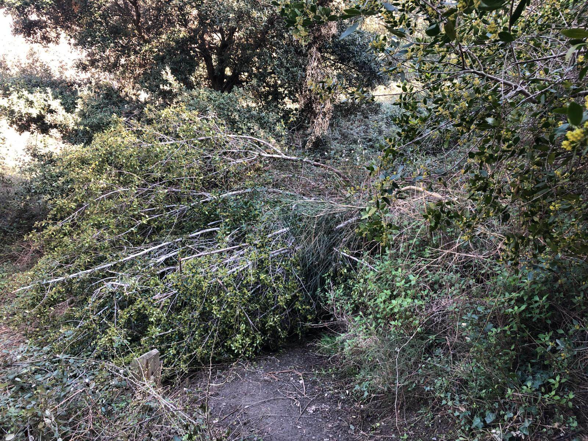

Collserola Sport Respecte Ciclisme
Presentació Associació i Projecte de Treball
Situació actual de la BTT
- És un dels esports més practicats a Catalunya (actualment molt per sobre del Esquí i fins i tot del futbol).
- La pràctica del BTT ha crescut un 20% TCAC als últims 10 anys (de 283.000 a 1.977.000)
- 40% de les visites al parc es fan en bicicleta.
Segons tendències Europees
-
La pràctica principal evoluciona del “generalista” Cross-Country (XC) a moltes sub-disciplines.
Problemática
EL BTT és practica als Corriols
-
Si res està permès ...tot estè permès
- Massificació (caps de setmana i a zones concretes ...camí de les aigües, vesant sud del Parc).
- Degradació del Medi Ambient
Impacte Medi-ambiental
Per usuari "aïllat"
-
De mitjana la BTT erosiona menys que un caminant en la globalitat del recorregut
- Tenen tendència a erosionar nomes en punts fixes, fàcilment identificables.
- La BTT no crea pol·lució biològica específica
- Impacte sonor i lumínic menor, degut a la velocitat més elevada i a una comunitat menys “xarrameca” que els grups de visitants a peu.
Per Massificació (BTT i resta d'usuaris)
- La gent es creua constantment en corriols estrets i aquests es van eixamplant
- El sols humits i tous es degraden, les plantes existents en aquests sols tenen una difícil recuperació.
-
Qualsevol obstacle creat per l'erosió natural fa que la gent creï alternatives de pas, això pot fer eixamplar el camí.
DE LLARG L'erosió principal es deu als episodis de pluja torrencial!
Impacte Massificació
- Situacions de conflicte i accidents
- La manca d'una "regulació realista" sobre l'us de la BTT perjudica el comportaments en ambdues bandes
La manca "d'espais dedicats" al BTT deriva en la creació puntual d’instal·lacions no naturals pel públic més jove.
Sobretot present a les pistes perifèriques on l'accés cotxe/transport públic < 4km
Impacte Sòcio-Econòmic de la BTT
- Consolidat a nivell Europeu com una de les activitats amb impacte socioeconòmic més positiu per la població
- Saludable, física i psicológicament
-
Creixement de la industria del BTT, especialment sector serveis (no botigues!)
Elevada diversificació de productes crea una economia més robusta
- Factor principal de desenvolupament econòmic en moltes regions tradicionalment deprimides
Experiència Global
No som els primers
Gran nombre de ciutats amb parc naturals adjacents on la densitat habitant/hectàrea és molt superior i on el problema ja està resolt
Experiència a Europa
- Londres
- Escòcia (+25 anys)
- França
- Alemanya
- ...
Trail Center
Segregació de tràfic per tipus d'usuari, normalment unidireccionals
Creació de rutes pre-establertes per canalitzar el tràfic mes massiu
Identificació de Corriols ben definits
Amb nivells de dificultat cobrint tot tipus de practicants
Manteniment i preparació per minimitzar o a millorar l’estat de degradació erosiva/biològica
Creació de zones d’exclusió completa (PER TOTHOM) per protecció biològica
Senyalització extensiva amb estàndards Europeus durant tot el recorregut i en tots el creuaments
Establiment de regles d’us inequívoques, realistes i acceptables per a tots el practicants
Creació d'infraestructures de suport mitjan materials naturals
- Barreres de canalització de tràfic i guia de les aigües pluvials
- “Casa del BTT”, proteccions de zones especialment vulnerables amb materials naturals (passos elevats a zones humides o rierols, proteccions amb tables de fusta a zones degradables, etc.)
Diversos Treballadors dedicats al manteniment, primers auxilis, gestió conflictes i mediació
Suport a la funció de Centineles
Normalment “esponsorizat” per actors importants de la industria, el que ajuda a l’educació dels practicants mitjançant la creació d’una cultura compartida BTT.
També fa manteniment i suport d’espais compartits amb usuaris no BTT.
Col·laboració i coordinació amb entitats no BTT